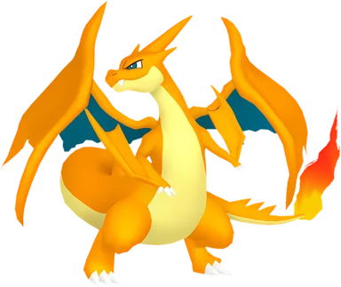
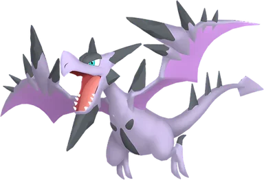
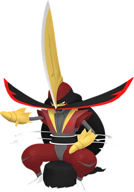
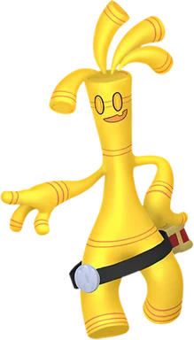
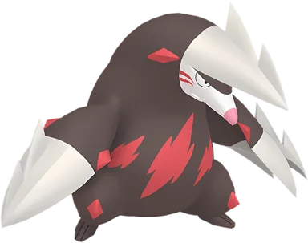
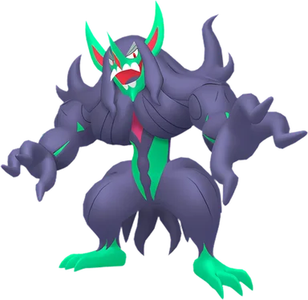

BATTLE · THE DRY RUN
Your six vs
the top 20.
Take a test run: the latest top tournament teams, least prepared first. Same calcs as your Matchups, both ways. How it works ›
6The Problems · they’re better prepared
13The Coin Flips · about even
1The Good Matchups · you’re better prepared
Top of the pile
from The Problems · start hereChallenger · 6th place · 2027 Puebla Pokémon Regional Championships · 333 players






You have an answer for 3 of 6 of their Pokémon. They have an answer for all 6 of yours.
Bring these four
Bring Garchomp + Sneasler up front, Whimsicott + Kingambit in back.
SET AS OPPONENT.Matchup prep: real damage calcs, least prepared matchups first.
The three piles
all 20 top teams · work through the pink pile first · tap one to flip itTHE PROBLEMS · 6
Start here · 6th placePuebla Regional · 333 players
Flip ›ChampionGdańsk Regional · 758 players


Flip ›

3rd placePuebla Regional · 333 players
Flip ›7th placePuebla Regional · 333 players


Flip ›
8th placePuebla Regional · 333 players

Flip ›3rd placeNice Regional · 862 players
Flip ›THE COIN FLIPS · 13
2nd placePuebla Regional · 333 players
Flip ›ChampionNice Regional · 862 players
Flip ›4th placeNice Regional · 862 players
Flip ›2nd placeGdańsk Regional · 758 players
Flip ›3rd placeGdańsk Regional · 758 players
Flip ›4th placeGdańsk Regional · 758 players
Flip ›5th placeGdańsk Regional · 758 players
Flip ›6th placeGdańsk Regional · 758 players
Flip ›7th placeGdańsk Regional · 758 players
Flip ›ChampionPuebla Regional · 333 players
Flip ›5th placePuebla Regional · 333 players
Flip ›2nd placeNice Regional · 862 players
Flip ›4th placePuebla Regional · 333 players
Flip ›THE GOOD MATCHUPS · 1